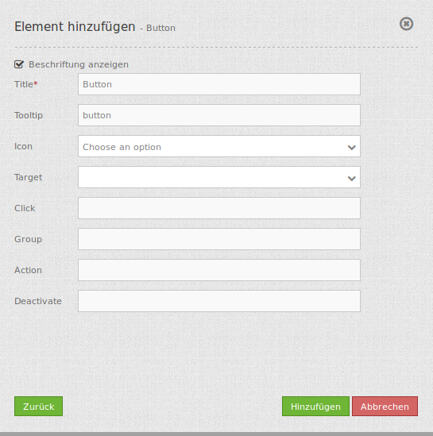

Button¶
Dieses Element stellt ein Button-Modul bereit. Einige Elemente wie die Legende, Layertree (Layerbaum), FeatureInfo (Infoabfrage), Linien- und Flächenberechnung und der Druck benötigen einen Button, um einen Dialog anzuzeigen oder um aktiviert zu werden, wenn das Element nicht in einem Frame definiert wurde.
Buttons können optional gruppiert werden, so dass nur ein Button in der Gruppe aktiviert ist. Dieses wird im Gruppen-Parameter eingestellt. Es kann außerdem ein Button definiert werden, der sich auf eine Webseite oder ein Script bezieht und bei Aktivierung zu diesem weiterleitet.
Konfiguration¶
{kind=link}
- Beschriftung anzeigen (Show button label): Schaltet die Beschriftung des Buttons an/aus.
- Title: Titel des Elements. Dieser wird in der Layouts Liste angezeigt und ermöglicht, mehrere Button-Elemente voneinander zu unterscheiden. Der Titel wird außerdem neben dem Button angezeigt, wenn “Beschriftung anzeigen” aktiviert ist.
- Tooltip: Text, der angezeigt wird, wenn der Mauszeiger eine längere Zeit über dem Element verweilt.
- Icon: Symbol des Buttons, basierend auf einer CSS Klasse.
- Target: Zielelement (Titel(ID)) des Buttons, das bei Anklicken des Buttons ausgelöst wird. (Bswp.: Drucken)
- Click: Bezieht sich auf eine Webseite oder ein Skript (z.B.: http://mapbender3.org)
- Group: Hiermit kann das Element einer Gruppe hinzugefügt werden. Aus der Gruppe kann nur ein Button aktiviert sein.
- Action: Methode, die aufgerufen wird, wenn der Button aktiviert wird.
- Deactivate: Methode, die aufgerufen wird, wenn der Button deaktiviert wird
Icons¶
Für einige Symbole können zwei verschiedene Icon-Typen ausgewählt werden.
- Ein Symbol basierend auf einer Grafik (z.B. “About”),
- Ein Symbol basierend auf einer Schrift (z.B. “About (Font Awesome)”).
Letztere basieren auf einem IconSet, das mit dem Mapbender als Modul ausgeliefert wird. Wir empfehlen die Verwendung der Symbole aus dieser Bibliothek.
Mehr Informationen dazu unter:
YAML-Definition:¶
title: # Titel
tooltip: # Text des Tooltips
icon: ~ # Symbol verwendete CSS Klasse
label: true # false/true, um den Button zu beschriften. Der Standardwert ist true.
target: ~ # Titel (Id) des Zielelements
click: # bezieht sich auf eine Webseite oder ein Skript, z.B.: http://mapbender3.org
group: ~ # Gruppe, in die der Button eingefügt werden soll. Nur ein Button pro Gruppe kann aktiviert sein.
action: ~ # Methode, die aufgerufen wird, wenn der Button aktiviert wird.
deactivate: ~ # Methode, die aufgerufen wird, wenn der Button deaktiviert wird
Class, Widget & Style¶
- Class: Mapbender\CoreBundle\Element\Button
- Widget: mapbender.mbButton (mapbender.element.button.js)
- Style: mapbender.elements.css
HTTP Callbacks¶
Keine.
JavaScript API¶
activate¶
Aktiviert den Button. Wird über einen Klick aufgerufen, wenn der Button deaktiviert ist.
deactivate¶
Deaktiviert den Button. Wird über einen Klick aufgerufen, wenn der Button aktiviert ist oder wenn ein anderer Button der gleichen Gruppe aktiviert ist.
JavaScript Signals¶
Keine.